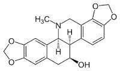
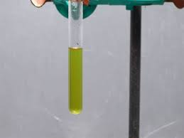
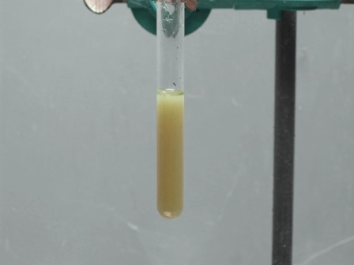

Ho vicino a casa, chissà perchè, un bell'assortimento di pianticelle di Chelidonia.
Se c'è in giro un vecchio muro lei se ne sta là vicino.
La Chelidonia mi accompagna fedele da anni nel perimetro della mia rustica "officina" tentando anche di invadere un po' dell'orto che ne è confinante, il quale, essendo rigorosamente riservato alle verdure per il pranzo e la cena, mal la sopporta.
Quest'erba evidentemente ama moltissimo le zone ruderali perchè la trovo immancabilmente a ridosso dei fabbricati e più raramente in terreno aperto.
Quella che ho fotografato si è fatta strada tra due antichi scalini, mangiando quel po' di humus che ristagna nella fessura della scala in pietra della legnaia.

Non mi sogno di parlare delle proprietà di questa pianta officinale, perchè basta scrivere "chelidonia" su Google e si trova tutto quel che si vuole; invece è interessante perchè, immersi in un succo arancione caustico e fortemente colorante, contiene anch'essa degli alcaloidi (chelidonina, cheleritrina, sanguinarina).
Una curiosità: mi è capitato in passato di dovermi liberare di pianticelle abbastanza grandi e numerose tanto da dover usare addirittura il decespugliatore, il quale, ruotando ad alta velocità, libera nell'aria tracce di linfa vegetale.
Ebbene, se non si è dovutamente accorti, bastano queste tracce inalate respirando per trovarsi un sapore amarissimo in bocca, con un effetto estremamente sgradevole e persistente.
Ecco la formula della chelidonina:

Già che si parla di alcaloidi, potevo mancare di provare il mio solito simpatico reattivo di Marme anche su questa pianticella? No, non potevo...
E allora consumiamo un'altra puntina del prezioso ioduro di cadmio ed un po' di KI per preparare il reattivo ed estraiamo alla buona un po' di succo dagli steli e via col test!
Ho fatto questa prova in maniera del tutto estemporanea e senza badar tanto al sottile; la giornata era brutta e fredda, queste son cose che si fanno meglio d'estate che nell'autunno di mezza montagna.
gAd oni modo ecco i risultati: a sinistra la soluzione acquosa del succo e a destra la medesima dopo l'aggiunta di qualche goccia di reattivo di Marme.


Si nota immediatamente un forte intorbidamento, segno che il reattivo è sensibile anche agli alcaloidi della chelidonia; naturalmente nulla è reperibile in bibliografia a questo riguardo, trattandosi di sostanze che esulano dai classici alcaloidi trattati con questi semplici rivelatori del passato.